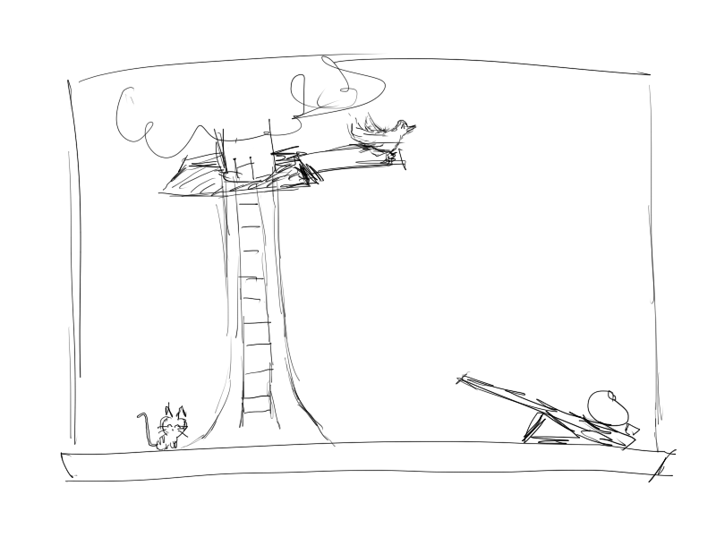

Mr. Fluffles is the resident blackboard cat of 3rd grade class 3-1 at the local elementary school. Join Mr. Fluffles, the class of 3B, and other animal friends in an exciting and puzzling adventure to learn addition, multiplication, division, and more!
"Chalk it up to the cat to teach my students math..." - the disgruntled and neglected homeroom teacher of 3-1
Math Cat is a 2D RPG puzzle sidescroller set on the blackboard of class 3-1. Solve puzzles and help Mr. Fluffles' friends to do whatever it is 8-year olds imagine an imaginary cat doing on a blackboard. Seriously, I don't know. Help Mr. Fluffles and his friends, which includes a napping ninja or something, defeat the evil shogun .. or something. Sue me.
The story/game should be linear to make writing the story and creating the game simple. The game can be problem/puzzle-driven. Mr. Fluffles either meets some sort of obstacle and needs to solve it to pass; sees something interesting and plays with it; or comes across a friend in need of assistance. The solution will be some application of math whether through simple arithmetic or problem-solving.
The game will take place over summer break. In the introduction, state how long vacation will be, e.g. 2 weeks, 14 days, 5 years, and then arrange the game into days. If that turns out to be too difficult, it's ok to just make the game a series of events with some end goal in mind, e.g. get all of Mr. Fluffles' friends ready for the end-of-year party.
Mr. Fluffles can navigate the blackboard (which sidescrolls) through the use of the WASD keys and will interact with the world either by being in the vicinity of objects or NPCs (in which case the spacebar could be used) or by clicking on and dragging objects.
Elementary school math should include everything from basic arithmetic to 3d calculus.